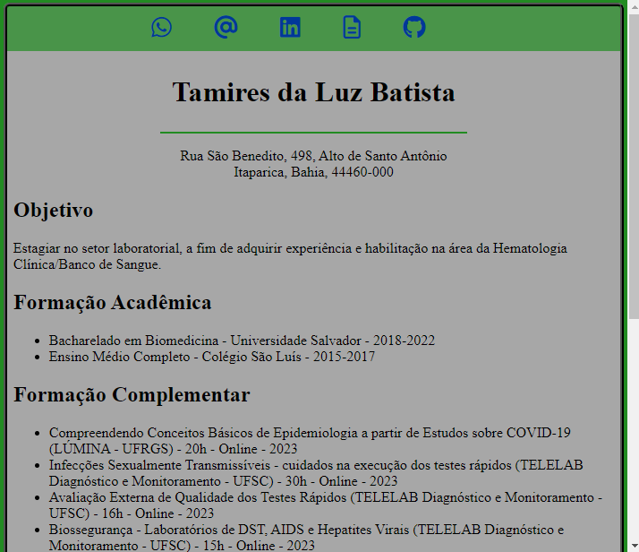
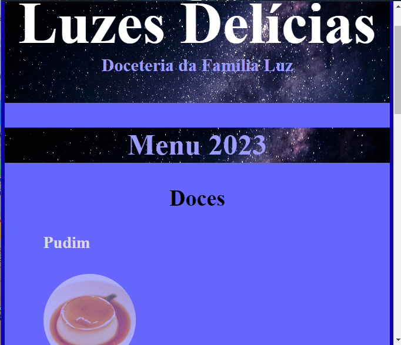
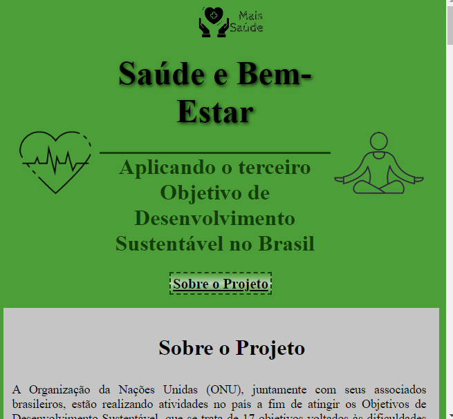
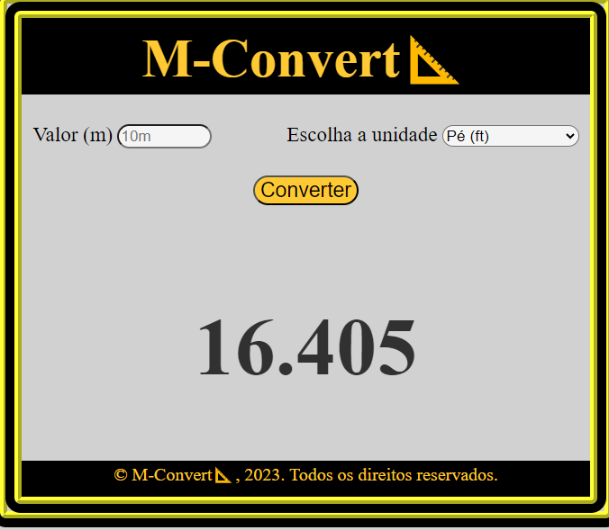

Tamires da Luz Batista
Projetos
Currículo 📑
currículoHtml 📌

Primeiro currículo em HTML, desenvolvido como meio de avaliação de aprendizado do programa ElasNaTech e aprimorado ao longo do curso
Cardápio 🍰
cardapio 📌

Cardápio fictício criado como primeira iniciativa de desenvolvimento de site, utilizando HTML e CSS para avaliação de aprendizado do programa ElasNaTech e aprimorado ao longo do curso
ODS 📈
ods-3 📌

Site sobre um dos Objetivos de Desenvolvimento Sustentável da ONU para o Brasil, sendo o primeiro site desenvolvido durante o programa ElasNaTech
Conversor de Distância 🔁
conversor 📌

Site básico de conversão de unidades de distância, desenvolvido para a primeira prática de JavaScript, contendo apenas uma utilização básica dessa linguagem